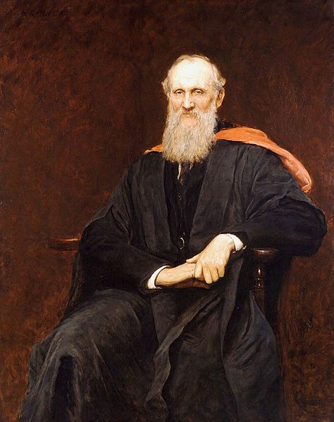

Lord Kelvin

หน่วยวัดอุณหภูมิ "เคลวิน (Kelvin)" เป็นหน่วยที่เรียกตามชื่อของนักวิทยาศาสตร์ William Thomson หรือรู้จักกันดีในนาม Lord Kelvin (1824-1907) โดยเป็นหน่วยในระบบ SI เขียนแทนด้วย K ซึ่งหน่วยนี้มีประโยชน์มากสำหรับนักวิทยาศาสตร์ในการคำนวณ เนื่องจากเป็นหน่วยวัดที่เริ่มต้นจากจุดศูนย์สัมบูรณ์ (absolute zero temperature) และอุณหภูมิที่ 373 หรือ 373.16 เคลวินจะตรงกับ 100 องศาเซลเซียส ส่วนจุดเยือกแข็งอยู่ที่ค่า 273 หรือ 273.16 เคลวิน ซึ่งตรงกับ 0 องศาเซลเซียส ดังนั้น จาก 273 จนถึง 373 จึงสามารถแบ่งสัดส่วนเป็น 100 หน่วยหรือ 100 ช่อง เช่นเดียวกับหน่วยวัด "องศาเซลเซียส" พอดี
อย่างไรก็ตาม เคลวินมีความแตกต่างเพราะว่ามันเป็น "สเกลสัมบูรณ์" คือมีจุดเริ่มต้นที่ค่าศูนย์สัมบูรณ์ ซึ่งเป็นจุดที่โมเลกุลของก๊าซไม่มีพลังงานความร้อนอยู่ เคลวินเป็นหน่วยที่ไม่มีคำว่า "องศา" อยู่ข้างหน้าและเป็นหน่วยที่ไม่มีตัวเลขติดลบ โดยเป็นการสะท้อนถึงปริมาณพลังงานความร้อนในโมเลกุล ซึ่งเมื่ออุณหภูมิในหน่วยเคลวินเพิ่มขึ้นเป็น 2 เท่า พลังงานความร้อนของมันก็จะเพิ่มขึ้นเป็น 2 เท่าเช่นกัน ส่วนหน่วย "องศาเซลเซียส" นั้น แม้ว่าจะมีสเกลแบ่งเป็น 100 หน่วยหรือ 100 ช่อง เท่ากับเคลวิน จึงดูคล้ายกัน แต่หากอุณหภูมิในหน่วยองศาเซลเซียสเพิ่มขึ้นเท่าหนึ่ง ก็ไม่ได้หมายความว่าพลังงานความร้อนในโมเลกุลจะเพิ่มเป็น 2 เท่าเหมือนกับหน่วยเคลวิน เพียงแต่เราอาจจะรู้สึกว่าร้อนเป็น 2 เท่า ซึ่งนั่นไม่ใช่ความหมายในเชิงอุณหพลศาสตร์ สำหรับในสหรัฐอเมริกาอาจจะมีการใช้หน่วยวัดอุณหภูมิเป็นองศาฟาเรนไฮต์ แต่ในเชิงวิทยาศาสตร์แล้ว ก็ยังคงใช้หน่วยเป็นองศาเซลเซียสและเคลวินอยู่ดี